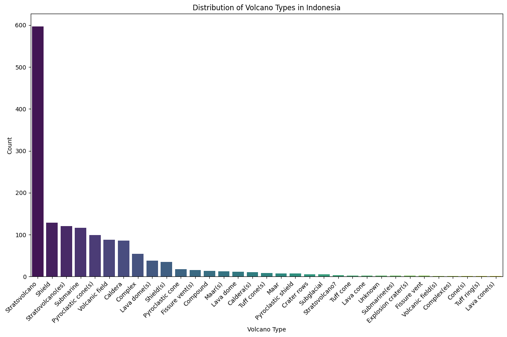
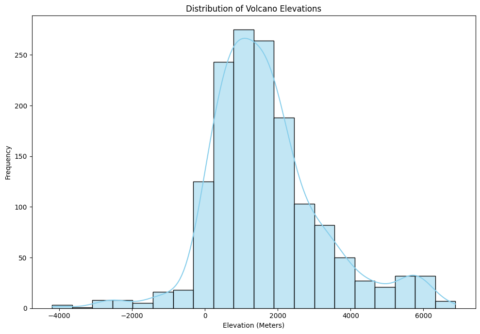

This notebook analyzes volcanic activity in Indonesia, using visualizations and predictive modeling to gain insights into volcanic characteristics, intensity, and spatial distribution.
!pip install prophetRequirement already satisfied: prophet in /opt/conda/lib/python3.10/site-packages (1.1.5)
Requirement already satisfied: cmdstanpy>=1.0.4 in /opt/conda/lib/python3.10/site-packages (from prophet) (1.2.4)
Requirement already satisfied: numpy>=1.15.4 in /opt/conda/lib/python3.10/site-packages (from prophet) (1.26.4)
Requirement already satisfied: matplotlib>=2.0.0 in /opt/conda/lib/python3.10/site-packages (from prophet) (3.7.5)
Requirement already satisfied: pandas>=1.0.4 in /opt/conda/lib/python3.10/site-packages (from prophet) (2.2.3)
Requirement already satisfied: holidays>=0.25 in /opt/conda/lib/python3.10/site-packages (from prophet) (0.57)
Requirement already satisfied: tqdm>=4.36.1 in /opt/conda/lib/python3.10/site-packages (from prophet) (4.66.4)
Requirement already satisfied: importlib-resources in /opt/conda/lib/python3.10/site-packages (from prophet) (6.4.0)
Requirement already satisfied: stanio<2.0.0,>=0.4.0 in /opt/conda/lib/python3.10/site-packages (from cmdstanpy>=1.0.4->prophet) (0.5.1)
Requirement already satisfied: python-dateutil in /opt/conda/lib/python3.10/site-packages (from holidays>=0.25->prophet) (2.9.0.post0)
Requirement already satisfied: contourpy>=1.0.1 in /opt/conda/lib/python3.10/site-packages (from matplotlib>=2.0.0->prophet) (1.2.1)
Requirement already satisfied: cycler>=0.10 in /opt/conda/lib/python3.10/site-packages (from matplotlib>=2.0.0->prophet) (0.12.1)
Requirement already satisfied: fonttools>=4.22.0 in /opt/conda/lib/python3.10/site-packages (from matplotlib>=2.0.0->prophet) (4.53.0)
Requirement already satisfied: kiwisolver>=1.0.1 in /opt/conda/lib/python3.10/site-packages (from matplotlib>=2.0.0->prophet) (1.4.5)
Requirement already satisfied: packaging>=20.0 in /opt/conda/lib/python3.10/site-packages (from matplotlib>=2.0.0->prophet) (21.3)
Requirement already satisfied: pillow>=6.2.0 in /opt/conda/lib/python3.10/site-packages (from matplotlib>=2.0.0->prophet) (10.3.0)
Requirement already satisfied: pyparsing>=2.3.1 in /opt/conda/lib/python3.10/site-packages (from matplotlib>=2.0.0->prophet) (3.1.2)
Requirement already satisfied: pytz>=2020.1 in /opt/conda/lib/python3.10/site-packages (from pandas>=1.0.4->prophet) (2024.1)
Requirement already satisfied: tzdata>=2022.7 in /opt/conda/lib/python3.10/site-packages (from pandas>=1.0.4->prophet) (2024.1)
Requirement already satisfied: six>=1.5 in /opt/conda/lib/python3.10/site-packages (from python-dateutil->holidays>=0.25->prophet) (1.16.0)
import pandas as pd
import numpy as np
import matplotlib.pyplot as plt
import seaborn as sns
import plotly.express as px
from sklearn.preprocessing import LabelEncoder
import prophet
import geopandas as gpd
from mpl_toolkits.axes_grid1 import make_axes_locatable
# Load volcano data
volcano_data = pd.read_csv('/kaggle/input/volcano-dataset/database.csv')
volcano_data.head()| Number | Name | Country | Region | Type | Activity Evidence | Last Known Eruption | Latitude | Longitude | Elevation (Meters) | Dominant Rock Type | Tectonic Setting | |
|---|---|---|---|---|---|---|---|---|---|---|---|---|
| 0 | 210010 | West Eifel Volcanic Field | Germany | Mediterranean and Western Asia | Maar(s) | Eruption Dated | 8300 BCE | 50.170 | 6.85 | 600 | Foidite | Rift Zone / Continental Crust (>25 km) |
| 1 | 210020 | Chaine des Puys | France | Mediterranean and Western Asia | Lava dome(s) | Eruption Dated | 4040 BCE | 45.775 | 2.97 | 1464 | Basalt / Picro-Basalt | Rift Zone / Continental Crust (>25 km) |
| 2 | 210030 | Olot Volcanic Field | Spain | Mediterranean and Western Asia | Pyroclastic cone(s) | Evidence Credible | Unknown | 42.170 | 2.53 | 893 | Trachybasalt / Tephrite Basanite | Intraplate / Continental Crust (>25 km) |
| 3 | 210040 | Calatrava Volcanic Field | Spain | Mediterranean and Western Asia | Pyroclastic cone(s) | Eruption Dated | 3600 BCE | 38.870 | -4.02 | 1117 | Basalt / Picro-Basalt | Intraplate / Continental Crust (>25 km) |
| 4 | 211001 | Larderello | Italy | Mediterranean and Western Asia | Explosion crater(s) | Eruption Observed | 1282 CE | 43.250 | 10.87 | 500 | No Data | Subduction Zone / Continental Crust (>25 km) |
# Check for missing values and basic data types
volcano_data.info()
volcano_data.describe(include='all')<class 'pandas.core.frame.DataFrame'>
RangeIndex: 1508 entries, 0 to 1507
Data columns (total 12 columns):
# Column Non-Null Count Dtype
--- ------ -------------- -----
0 Number 1508 non-null int64
1 Name 1508 non-null object
2 Country 1508 non-null object
3 Region 1508 non-null object
4 Type 1508 non-null object
5 Activity Evidence 1507 non-null object
6 Last Known Eruption 1508 non-null object
7 Latitude 1508 non-null float64
8 Longitude 1508 non-null float64
9 Elevation (Meters) 1508 non-null int64
10 Dominant Rock Type 1455 non-null object
11 Tectonic Setting 1501 non-null object
dtypes: float64(2), int64(2), object(8)
memory usage: 141.5+ KB
| Number | Name | Country | Region | Type | Activity Evidence | Last Known Eruption | Latitude | Longitude | Elevation (Meters) | Dominant Rock Type | Tectonic Setting | |
|---|---|---|---|---|---|---|---|---|---|---|---|---|
| count | 1508.000000 | 1508 | 1508 | 1508 | 1508 | 1507 | 1508 | 1508.000000 | 1508.000000 | 1508.000000 | 1455 | 1501 |
| unique | NaN | 1478 | 100 | 19 | 33 | 6 | 399 | NaN | NaN | NaN | 11 | 11 |
| top | NaN | Unnamed | United States | South America | Stratovolcano | Eruption Observed | Unknown | NaN | NaN | NaN | Andesite / Basaltic Andesite | Subduction Zone / Continental Crust (>25 km) |
| freq | NaN | 23 | 173 | 197 | 597 | 568 | 637 | NaN | NaN | NaN | 578 | 762 |
| mean | 296656.110743 | NaN | NaN | NaN | NaN | NaN | NaN | 14.083156 | 23.391469 | 1683.357427 | NaN | NaN |
| std | 48861.852600 | NaN | NaN | NaN | NaN | NaN | NaN | 31.871107 | 113.656588 | 1571.102885 | NaN | NaN |
| min | 210010.000000 | NaN | NaN | NaN | NaN | NaN | NaN | -78.500000 | -179.970000 | -4200.000000 | NaN | NaN |
| 25% | 261157.500000 | NaN | NaN | NaN | NaN | NaN | NaN | -7.068750 | -78.274250 | 687.250000 | NaN | NaN |
| 50% | 300015.000000 | NaN | NaN | NaN | NaN | NaN | NaN | 13.861500 | 38.390000 | 1464.000000 | NaN | NaN |
| 75% | 342123.250000 | NaN | NaN | NaN | NaN | NaN | NaN | 41.748750 | 138.578000 | 2352.250000 | NaN | NaN |
| max | 390847.000000 | NaN | NaN | NaN | NaN | NaN | NaN | 85.608000 | 179.580000 | 6879.000000 | NaN | NaN |
# Fill missing values for analysis
volcano_data['Activity Evidence'] = volcano_data['Activity Evidence'].fillna('Unknown')
volcano_data['Dominant Rock Type'] = volcano_data['Dominant Rock Type'].fillna('Unknown')# Filter for volcanoes in Indonesia
indonesia_volcano_data = volcano_data[volcano_data['Country'] == 'Indonesia']
# Plot volcano locations in Indonesia
fig = px.scatter_mapbox(indonesia_volcano_data, lat='Latitude', lon='Longitude',
hover_name='Name', hover_data=['Country', 'Region', 'Type'],
color='Type', zoom=4, height=600, title="Volcano Locations in Indonesia")
fig.update_layout(mapbox_style="carto-positron")
fig.show()import plotly.express as px
# Filter volcano data for Indonesia
indonesia_volcano_data = volcano_data[volcano_data['Country'] == 'Indonesia']
# Ensure Latitude and Longitude columns are numeric
indonesia_volcano_data['Latitude'] = pd.to_numeric(indonesia_volcano_data['Latitude'], errors='coerce')
indonesia_volcano_data['Longitude'] = pd.to_numeric(indonesia_volcano_data['Longitude'], errors='coerce')
# Remove rows with missing coordinates or elevation
indonesia_volcano_data = indonesia_volcano_data.dropna(subset=['Latitude', 'Longitude', 'Elevation (Meters)'])
# Get the elevation range for the volcanoes
elevation_range = (indonesia_volcano_data['Elevation (Meters)'].min(), indonesia_volcano_data['Elevation (Meters)'].max())
# Create a density heatmap of volcanoes on the map of Indonesia
fig = px.density_mapbox(indonesia_volcano_data, lat='Latitude', lon='Longitude',
hover_name='Name', hover_data=['Country', 'Region', 'Type', 'Elevation (Meters)'],
color_continuous_scale='Reds',
title=f"Density Heatmap of Volcanoes in Indonesia (Elevation Range: {elevation_range[0]}m to {elevation_range[1]}m)",
zoom=4, height=600)
# Update the map style (using a Mapbox style that doesn't require an access token)
fig.update_layout(mapbox_style="open-street-map")
# Show the plot
fig.show()/tmp/ipykernel_30/976909514.py:7: SettingWithCopyWarning:
A value is trying to be set on a copy of a slice from a DataFrame.
Try using .loc[row_indexer,col_indexer] = value instead
See the caveats in the documentation: https://pandas.pydata.org/pandas-docs/stable/user_guide/indexing.html#returning-a-view-versus-a-copy
/tmp/ipykernel_30/976909514.py:8: SettingWithCopyWarning:
A value is trying to be set on a copy of a slice from a DataFrame.
Try using .loc[row_indexer,col_indexer] = value instead
See the caveats in the documentation: https://pandas.pydata.org/pandas-docs/stable/user_guide/indexing.html#returning-a-view-versus-a-copy
import matplotlib.pyplot as plt
import seaborn as sns
# Plot volcano types with adjusted figure size and rotation
plt.figure(figsize=(12, 8)) # Increase figure size for clarity
sns.countplot(data=volcano_data, x='Type', order=volcano_data['Type'].value_counts().index, palette='viridis')
plt.xticks(rotation=45, ha='right') # Rotate labels and align them to the right
plt.title("Distribution of Volcano Types in Indonesia")
plt.xlabel("Volcano Type")
plt.ylabel("Count")
plt.tight_layout() # Adjust layout to ensure everything fits
plt.show()
# Plot elevation distribution
plt.figure(figsize=(10, 7))
sns.histplot(volcano_data['Elevation (Meters)'], bins=20, kde=True, color='skyblue')
plt.title("Distribution of Volcano Elevations")
plt.xlabel("Elevation (Meters)")
plt.ylabel("Frequency")
plt.tight_layout()
plt.show()
/opt/conda/lib/python3.10/site-packages/seaborn/_oldcore.py:1119: FutureWarning:
use_inf_as_na option is deprecated and will be removed in a future version. Convert inf values to NaN before operating instead.
